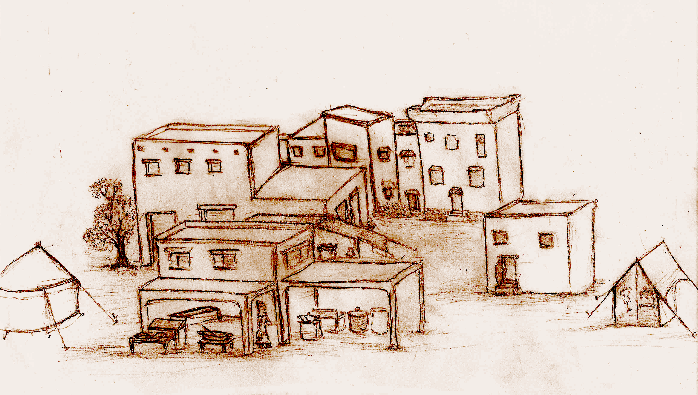

This field guide works as a dungeon preparation pamphlet. You'll find a description of common items and their uses here. As well as combat, skills and exploration mechanics.
This is also meant to be a reference guide. We are expecting readers to return frequently either to refresh or explain these concepts to other DepthRangers.
This is a list of all the items you can find across the market's many shops. This should be more than enough for an eager explorer, though there are many things not found here which you may find beneath the surface.

Every trader you find, regardless of their specialty or location, will purify expired goods for 1g (per piece) as a service to explorers.
Tough most of what you buy is already second hand, it doesn't mean you are not affected by depreciation. When you sell items, you only get half the item's price. You can always sell gear at the surface, but there are actually a good deal of places to sell gear in the dungeon itself.
When making your purchases, keep in mind that once inside the dungeon, there is less time to go rummaging through your backpacks. So each party member should be somewhat self sufficient. On one hand, adventurers can exchange items only outside of combat. And even then, since you're on the go, you can only exchange one item at a time (one item per room traveled). That means that if you wish to give your party mate 3 bottles of healing, you will give them one at a time as you keep on exploring so that you both hand over each and store them.
These concepts will be used for many aspects of the game such as monster damage. We suggest that you always ignore fractions in any calculations you do.
Level you're currently at in a dungeon (starts at 0), found in calculations as: dungeon_level. Again if you're not in a dungeon, then your quest itself determines what this value is.
In The Hunt For The Treasure Of Aural Hall the level of a monster is always the same as the dungeon_level. Monsters have generally (dungeon_level)d6 HP as well as damage.
Level your playable character currently has (starts at 1), found in calculations as: character_level
Amount of playable characters that make up your party. These monster encounters were designed with 4 in mind, so you might need to make adjustments if you deviate a lot from this amount. Found in calculations as: party_size
A DepthRanger's life is not a cozy one - Life or death situations are commonplace in the depths. This section are the bits of knowledge that provide a lifeline to these brave explorers. Whenever you face an Encounter, Quest Encounter or find yourself facing an opponent there are some things that should be taken into consideration.
After that, it's time to begin combat. It's always a wise strategy to carry melee and ranged weapons as well, the best weapon type is having both!!!
Be mindful of aiming. Some attacks can produce devastating damage, these are known as critical attacks, most do normal damage, and some of them are simply ineffective and miss the target.
With that out of the way, the next sections will get into detail on the particulars of aiming, tactics, etc.
Monsters may react in a non-hostile manner (or not); some monsters will only react if there's a Brownie in the party. Throwing a reaction die provides 3 outcomes:
| Roll | Reaction | Description |
|---|---|---|
| 1-2 | Hostile | You engage in combat |
| 3-4 | Persuadable | Pay (monster_level+1)d6 gold and be left alone, pay twice that amount and gain clues if that is a quest event for you. If you don't have the money to be left alone they will pretend to be friendly and engage when you least expect it. Characters with the reconnaissance attribute get to roll as if it were a Quest Encounter. Otherwise, monsters get to attack first. |
| 5-6 | Friendly | Monsters will not attack and can offer clues if your quest requires them. |
While nothing would be best than the heroic DepthRangers to always strike first, that is not always possible. Especially after lowering the guard during a negocioation. In any case combat order can be determined by doing the following:
To determine combat order, you must roll a d6:
| Encounter Type | Roll To Attack First |
|---|---|
| Normal | (4-character_level+dungeon_level) |
| Quest Encounter | (5-character_level+dungeon level) |
| Boss | Bosses always go first. |
When not facing Bosses (they always go first), players rolling a 6 go first. If you roll a 1 monsters strike first.
Characters with the reconnaissance attribute will add a +1 to these rolls.
The order of combat is:
Single and Two-Handed weapons are used by front line combatants. They have the advantage of not requiring munitions, plus certain classes have boons specifically for this type of combat.
A ranged weapon generates the same level of damage as a melee weapon. Since using a ranged weapon allows the user to attack at a distance, that user is granted +(character_level) AC. When a player is using a ranged weapon, they use both hands so technically ranged weapons are a special class of two handed weapon though they only take up one slot when stored. Meaning a character wielding a ranged weapon can't hold a torch.
Unfortunately, each use consumes an arrow and you can only have 10 arrows per slot (unless you find a quiver). In addition, you may need a backup melee weapon to switch to if you run out of ammonition. Also, in order to use your ranged weapon you need to equip the ranged weapon ahead of time. Changing weapons mid battle requires spending a turn performing this task.
Finally, you can't use ranged weapons to detain someone who's trying to escape (you use your hands or the flat of the blade).
When a character lacks a weapon, they have single handed weapon accuracy and inflict character_level damage. Meaning that an unarmed party member will throw dice to determine if their attack lands but produce minimal constant damage. Armored enemies will suffer minimal damage from unarmed strikes, if any. So don't enter the dungeon unarmed.
Attack outcome is determined when damage dice are rolled, in other words there's no need for an additional roll to determine outcome.
Depending on what numbers were rolled, one of three things will happen:
A Critical Attack is a devasting blow. Not only do Critical Attacks perform serious damage, certain classes and monster types often also unleash a specific tactical maneuver.
| Character Level | Number Of Fives/Sixes Rolled |
|---|---|
| If the character rolls a 6, it performs a critical attack. | |
| If the character rolls a single 6, it performs a critical attack. | |
| If the character rolls a combination of one 5 or 6, and one 6 it performs a critical attack. | |
| If the character rolls a combination of one 5 or 6, and one 6 it performs a critical attack. | |
| If the character rolls a combination of two 5 or 6, and one 6 it performs a critical attack. | |
| If the character rolls a combination of two 5 or 6, and one 6 it performs a critical attack. |
During combat, weapon accuracy is determined with the same dice throw used for damage.
When you roll (character_level)/2+1 one's, that character misses. That is, it takes rolling a 1 on the first level then an additional 1 every even level up. This is laid out on the table below:
| Character Level | Number Of Ones Rolled That Cause The Character To Miss An Attack |
|---|---|
| 1, if the character rolls a single one, the attack misses. | |
| 1, if the character rolls a single one, the attack misses. | |
| 2, if the character rolls two ones, the attack misses. | |
| 2, if the character rolls two ones, the attack misses. | |
| 3, if the character rolls three ones, the attack misses. | |
| 3, if the character rolls three ones, the attack misses. |
A two handed sword allows you to ignore one of these rolls, when you roll (character_level)/2+2 one's, that character misses. Similar to the above, just a bit more accuracy:
| Character Level | Number Of Ones Rolled That Cause The Character To Miss An Attack |
|---|---|
| n/a, the attack always succeeds. | |
| 2, if the character rolls a two ones, the attack misses. | |
| 3, if the character rolls three ones, it misses. | |
| 3, if the character rolls three ones, it misses. | |
| 4, if the character rolls four ones, it misses. | |
| 4, if the character rolls four ones, it misses. |
Normal attacks are attacks that are not devastating Critical Attacks, but also did not miss (see Attack Accuracy above). On a normal attack simply tally the damage dice and add any bonuses (or minuses) to the total damage output then subtract enemy armor if any.
What are you a humanoid or a rat person? No retreating, you succeed or die trying!
We actively discourage retreat, however if you wish to include this, then all characters in the party must roll a successful dex save to run away. Upon failure, you spend a turn inactive - in the process of escape you lose tactical advantage while the enemy attacks freely for that round.
Hazard dice depict the dangerous nature of your profession, thrown after 4 non combat events.
Non Combat Events represent a sizeable lapse of time spent out combat during your adventures. Non Combat events are:
Whenever a trap is sprung, a combat initiated or a hazard die is thrown, the non combat event count goes back to 0.
The point is that spending idle time is a luxury and comes at a cost. Besides, the existence of hazard die is a reminder of why you can't just rest anywhere.
Hazard Die Rolls depict events that take you by surprise when things seemed otherwise peaceful during your adventures. Players roll hazard die to determine the nature of the event.
Due to the danger of their environment adventurers can't be too distracted while traveling the dungeon. They can only perform one transaction per room traveled. Transactions available are:
In other words, all characters must have planned ahead to be mostly self-sufficient. These transactions are there to provide support but not to compesate for lack of planning.
Out of combat transactions do not count as non-combat events. Instead they represent activities the party can do without interrupting their travels.
Searching: Players can search for hidden mysteries such as secret doors by rolling a d6 that must be greater than:
Both Elves and Rogues get a +1 to search rolls; an Elven Rogue will get a +2 to search rolls.
To detect a Secret Door you must perform a successful search.
The process of searching is slow and counts as a non-combat event (for the purposes of hazard dice rolls).
To pick a lock a player must throw a 1d6 and roll greater than 4. Rogues gain a +1, and Brownies also gain a +1 to lock-picking throws. A Brownie Rogue gets a +2 to lock picking rolls.
The process of picking a lock takes time and counts as a non-combat event (for the purposes of hazard dice rolls).
Also Picking a lock consumes a lock-pickers kit.
In The Hunt For The Treasure Of Aural Hall, the player who entered the room or rolled hazard die has a chance to deactivate the trap so long as it holds a set of thief's tools in its possession (its inventory). To successfully disable a trap, you must throw a 1d6 and roll greater than (4+dungeon_level/2) (see the Trap Deactivation Table in the Navigation Charts). If you succeed you deactivated the trap, if you fail the trap is sprung. Failure to deactivate the trap means all players must save against the trap to avoid its effects.
An attempt at trap deactivation will consume a set of thieves tools regardless of outcome. The character must already have the set of thief's tools in its possession, there is just not enough time to borrow the tools from another player. Rogues get a +1 to trap deactivation rolls.
A character has an open wound that causes it to lose (dungeon_level) HP every time a hazard die is thrown. Bleeding can be cured upon resting or application of a bandage.
A diseased character grows weakened. They will roll a d6 every time a hazard die is thrown: on a roll of 1 they must fatigue a slot.
Since a diseased character is weakened they will also walk slower; the party will expend 2 non combat events each time you travel to a visited location.
To cure disease, you can drink medicine (which will remove the status effect but not recover any fatigued slots) or ask the healer to purify. While characters recover upon reaching the surface, resting does not cure this status ailment.
If your character is poisoned, it will become weakened and walk slower; forcing the party to expend 2 non combat events each time you travel to a visited location. A poisoned character will roll a d6 every time a hazard die is thrown, on a roll of 1 they will receive (poisoned_level) damage. Hence at dungeon_level 0, the character is slowed but receives no ongoing damage.
poisoned_level: When you're poisoned, note the dungeon_level you're currently at when the creature poisoned you. This will be your: "poisoned_level".
If your character is poisoned for a second time, it keeps the largest poisoned_level value.
As an example, if you were poisoned at dungeon_level then poisoned again by a dungeon_level 3 creature, your poisoned_level will be 3; if you're poisoned by a dungeon_level 3 then again at dungeon_level 1, your poisoned_level will also be 3 (you are afflicted by the most potent poison).
To remove the poison, you can use an antidote, or have your healer purify your wound. If you use an antidote, you must roll vs your poisoned_level to make sure that the antidote is effective. Note that Healer characters have bonuses that make it easier to cure poisons.
A character with a minor injury will slow down the party, the party will expend 2 non combat events each time you travel to a visited location.
Thankfully, this injury is not serious: You can either...
A round of fatigue forces you to lose one inventory slot. Fatigue is cumulative, meaning each round of fatigue makes you lose an additional slot, and can only be fully restored upon rest, and partially restored (a single slot) by consuming a tonic. Players are free to choose which slot is afflicted by fatigue (so I suggest starting with the free slots).
While quest rewards are certainly a great incentive to explore the depths, treasure is also a potent motivator. Upon finding underground treasure, you have the following options:
Whomever opens a treasure, gets to keep its contents. However, if you choose to open it, then you may need to expend thief's tools. Additionally, if the treasure is trapped you will be the one to deal with the trap (which could affect the entire party)!
Nothing like taking the armor off and resting those sore limbs. Whenever you leave the dungeon, your characters rest by default (in story). Resting eases fatigue (all fatigued slots are recovered), fully heals HP, recovers Healer & Mage spells. Also a rest resets non combat event count to 0.
However, resting in the dungeon depends on finding a safe place to rest (which is not too common). Note that even if you find a place to rest, you need provisions for each member of your team. There are few places that actually offer food but generally you need your own food to benefit from resting. Anyone who does not eat, will not recover, and if they go 2 days (rest twice) without eating they fatigue 3 spaces, which doubles each day there after (we consider resting to take a day) until fed and rested (and this can't be cured by a spell).
Each character consumes a ration, but it doesn't matter who's carrying the rations. Just keep in mind that when you have a brownie in your party sharing a meal may help you make friends out of the less aggressive monsters.
Therefore, as far as normal HP and status recovery is concerned, it's primarily your healer's job and resting is a luxury that's welcome but can't be taken for granted.
Dwarfs don't need a source of light, however Brownies, Elves and Humans do. You spend one torch each time you go through a flight of stairs. There may be other times when this is done as well. You can use a single torch, Aura of Light or Illuminate to make out your bearings and spot the many dangers in the dungeon. That said, spells are a finite and expensive resource. Any character that is not a Dwarf, will die automatically if your party runs out of light.
The guild levels up characters that successfully complete one of their quests. To level up, players must enter the dungeon, successfully complete the objective, then return to the guild.
There's no XP tracking in this campaign!